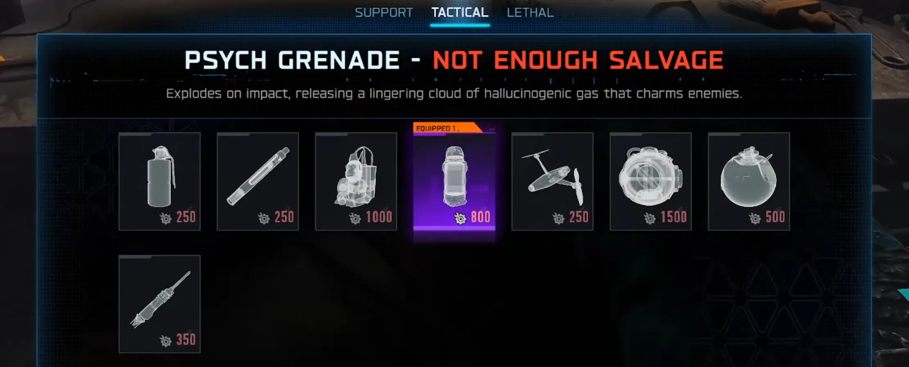
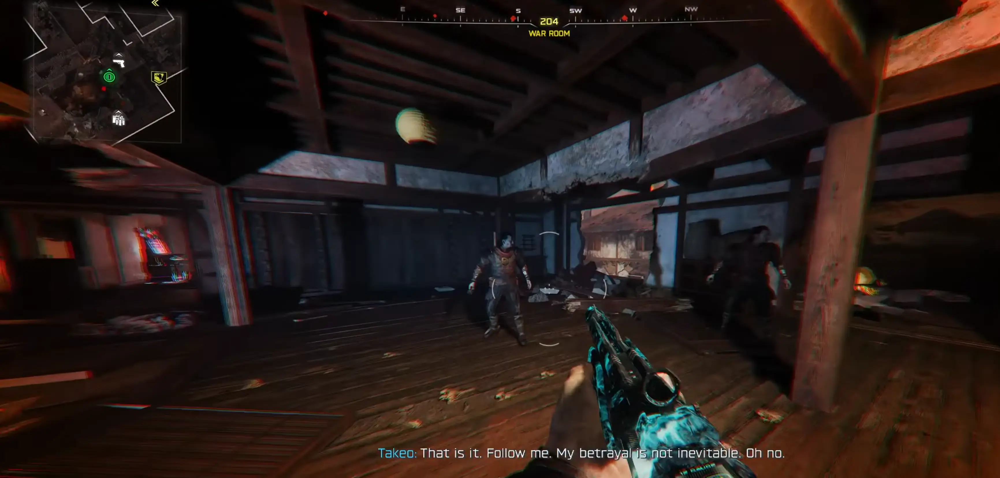
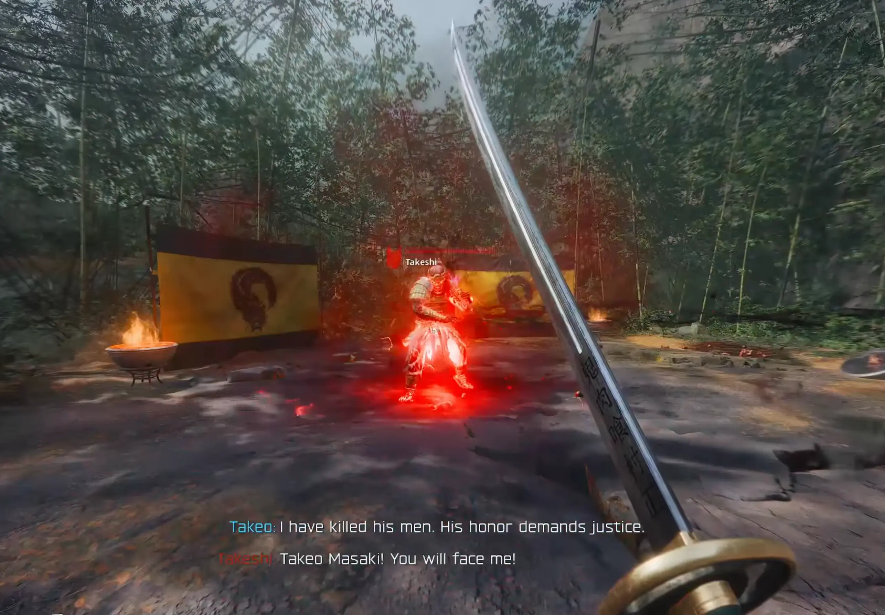
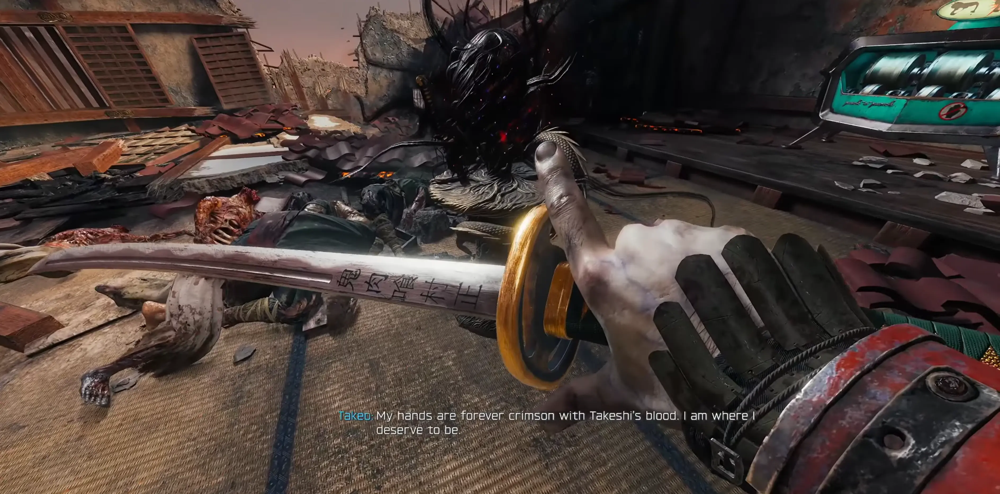

Standardowo, zacznij od uruchomienia prądu i ukończenia procesu odblokowania maszyny Pack-a-Punch.
Możesz je znaleźć jako losowy łup z zabitych zombie lub po prostu kupić przy dowolnym Stole rzemieślniczym.

Udaj się do lokacji War Room (Pokój wojenny). Stań na środku i rzuć granat psyhotropowy prosto pod swoje nogi. Zamiast zwykłego klona, zobaczysz upiorną wizję samego siebie – to nawiązanie do starych koszmarów z mapy Zetsubou No Shima. Podejdź do swojego klona, a na ziemię upadnie jarząca się na czerwono katana. Wejdź z nią w interakcję, by rozpocząć rytuał.

Zostaniesz przeniesiony do wizji, w której poznasz tragiczny los brata bliźniaka Takeo – Takeshiego. Przygotuj się na ostrą miazgę:Zostaniesz przeniesiony do wizji, w której poznasz tragiczny los brata bliźniaka Takeo – Takeshiego. Przygotuj się na ostrą miazgę:

Gdy pokonasz brata, wokół Ciebie pojawią się mroczne pnącza i pajęczyny wychodzące z World Seed (Ziarno Świata). Usłyszysz głos Bytu (The Entity), który ogłosi, że Twoje ręce są na zawsze splamione krwią i naznaczone klątwą.
Po chwili wrócisz na główną mapę z pełnym ekwipunkiem:
